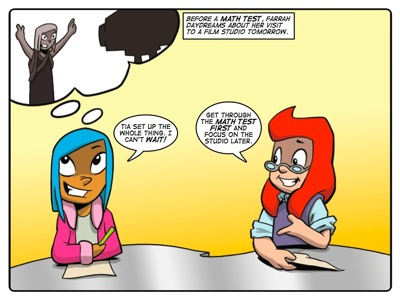
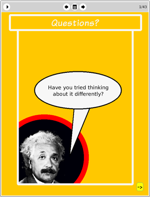

Story: The Trial
Theme: A story about asking questions.
Synopsis
Farrah can barely concentrate on her maths test because she is due to go on a tour of Galaxy Film Studios tomorrow. She sits idly daydreaming but her classmate Vicki sees Farrah’s glazed stare as an attempt to copy her work. She is outraged and publicly accuses Farrah of cheating. This incenses Sophie who challenges Vicki to prove her accusation in a mock trial.
The story demonstrates the usefulness of well-chosen questions and the uselessness of poorly chosen questions. There are questions littered throughout the tale but the key questions are asked during the trial. The focus of these questions follows the form of legal inquisition. Legal questions should:
1. Find the truth.
2. Be relevant to the context.
3. Gather sufficient evidence to support a proposition.
Vicki’s questions during the trial fail to establish truth, relevance or sufficient evidence to support her case against Farrah. Sophie’s questions are framed more thoughtfully and quickly clear Farrah of any wrongdoing.
Activity
This activity challenges learners to play question tennis. Question tennis is a game where players have a one-on-one conversation in questions only.
The purpose of the activity is to get learners to practice the habit of asking questions instead of making statements. This helps learners to learn from conversation by forcing them to listen and absorb what the other player is saying. It also encourages their first instinct to be inquiry rather than judgment.
In doing this activity we want learners to recognise that you can ask questions about anything and you can ask them at any time.

The eToys project:
QuestionsIn this project Sophie introduces learners to four great thinkers: Einstein, Darwin, Curie and Edison. Sophie then shows learners how to create scripts to make these four thinkers ask problem-solving questions. The intention underpinning this project is to give learners the experience of creating software that can engage learners both visually (as all other projects have) but also verbally.